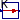
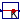
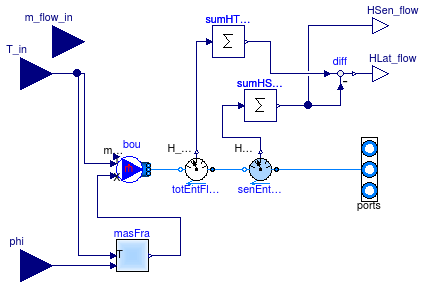

Package with functions to communicate with the Building Controls Virtual Test Bed
Extends from Modelica.Icons.VariantsPackage (Icon for package containing variants).
| Name | Description |
|---|---|
| User's Guide | |
| MoistAirInterface | Fluid interface that can be coupled to BCVTB for medium that model the air humidity |
| BCVTB | Block that exchanges data with the Building Controls Virtual Test Bed |
|  To_degC | Converts Kelvin to Celsius |
|  From_degC | Converts Celsius to Kelvin |
| Collection of models that illustrate model use and test models | |
| Package with base classes for Buildings.Utilities.IO.BCVTB |
Fluid interface that can be coupled to BCVTB for medium that model the air humidity

The model takes as input signals the temperature and water vapor concentration and, optionally, a bulk mass flow rate into or out of the system boundary. The state of the fluid that flows out of this model will be at this temperature and water vapor concentration. The output of this model are the sensible and latent heat exchanged across the system boundary.
When used with the BCVTB, a building simulation program such as EnergyPlus may compute the room air temperatures and room air humidity rate, which is then used as an input to this model. The sensible and latent heat flow rates may be sent to EnergyPlus to couple the air-conditioning system to the energy balance of the building model.
Note: The EnergyPlus building simulation program outputs the
absolute humidity ratio in units of [kg/kg dry air]. Since
Modelica.Media uses [kg/kg total mass of air], this quantity
needs to be converted. The conversion can be done with the model
Buildings.Utilities.Psychrometrics.ToTotalAir.
Extends from Buildings.Utilities.IO.BCVTB.BaseClasses.FluidInterface (Partial class for fluid interface that can be coupled to BCVTB).
| Type | Name | Default | Description |
|---|---|---|---|
| replaceable package Medium | PartialMedium | Medium model within the source | |
| Boolean | use_m_flow_in | false | Get the mass flow rate from the input connector |
| MassFlowRate | m_flow | 0 | Fixed mass flow rate going out of the fluid port [kg/s] |
| Nominal condition | |||
| MassFlowRate | m_flow_nominal | Nominal mass flow rate, used for regularization near zero flow [kg/s] | |
| Advanced | |||
| MassFlowRate | m_flow_small | 1E-4*m_flow_nominal | For bi-directional flow, temperature is regularized in the region |m_flow| < m_flow_small (m_flow_small > 0 required) [kg/s] |
| Type | Name | Description |
|---|---|---|
| input RealInput | m_flow_in | Prescribed mass flow rate |
| input RealInput | T_in | Prescribed boundary temperature |
| FluidPorts_b | ports[nPorts] | |
| output RealOutput | HSen_flow | Sensible enthalpy flow rate, positive if flow into the component [W] |
| output RealOutput | HLat_flow | Latent enthalpy flow rate, positive if flow into the component [W] |
| input RealInput | phi | Medium relative humidity |
Block that exchanges data with the Building Controls Virtual Test Bed
At the start of the simulation, this block establishes a socket connection using the Berkeley Software Distribution socket (BSD socket). At each sampling interval, data are exchanged between Modelica and the BCVTB. When Dymola terminates, a signal is sent to the BCVTB so that it can terminate gracefully.
For each element in the input vector uR[nDblWri],
the value of the flag flaDblWri[nDblWri] determines whether
the current value, the average over the sampling interval or the integral
over the sampling interval is sent to the BCVTB. The following three options are allowed:
| flaDblWri[i] | Value sent to the BCVTB |
| 0 | Current value of uR[i] |
| 1 | Average value of uR[i] over the sampling interval |
| 2 | Integral of uR[i] over the sampling interval |
For the first call to the BCVTB interface, the value of the parameter uStart[nDblWri]
will be used instead of uR[nDblWri]. This avoids an algebraic loop when determining
the initial conditions. If uR[nDblWri] were to be used, then computing the initial conditions
may require an iterative solution in which the function exchangeWithSocket may be called
multiple times.
Unfortunately, it does not seem possible to use a parameter that would give a user the option to either
select uR[i] or uStart[i] in the first data exchange. The reason is that the symbolic solver does not evaluate
the test that picks uR[i] or uStart[i], and hence there would be an algebraic loop.
If the parameter activateInterface is set to false, then no data is exchanged with the BCVTB.
The output of this block is then equal to the value of the parameter yRFixed[nDblRea].
This option can be helpful during debugging. Since during model translation, the functions are
still linked to the C library, the header files and libraries need to be present in the current working
directory even if activateInterface=false.
Extends from Modelica.Blocks.Interfaces.DiscreteBlock (Base class of discrete control blocks).
| Type | Name | Default | Description |
|---|---|---|---|
| Time | samplePeriod | if activateInterface then ti... | Sample period of component [s] |
| Time | startTime | 0 | First sample time instant [s] |
| Boolean | activateInterface | true | Set to false to deactivate interface and use instead yFixed as output |
| Time | timeStep | Time step used for the synchronization [s] | |
| String | xmlFileName | "socket.cfg" | Name of the file that is generated by the BCVTB and that contains the socket information |
| Integer | nDblWri | Number of double values to write to the BCVTB | |
| Integer | nDblRea | Number of double values to be read from the BCVTB | |
| Integer | flaDblWri[nDblWri] | zeros(nDblWri) | Flag for double values (0: use current value, 1: use average over interval, 2: use integral over interval) |
| Real | uStart[nDblWri] | Initial input signal, used during first data transfer with BCVTB | |
| Real | yRFixed[nDblRea] | zeros(nDblRea) | Fixed output, used if activateInterface=false |
| Type | Name | Description |
|---|---|---|
| input RealInput | uR[nDblWri] | Real inputs to be sent to the BCVTB |
| output RealOutput | yR[nDblRea] | Real outputs received from the BCVTB |
Converts Kelvin to Celsius
Converts the input from degree Celsius to Kelvin. Note that inside Modelica, it is strongly recommended to use Kelvin. This block is provided for convenience since the BCVTB interface may couple Modelica to programs that use Celsius as the unit for temperature.
Extends from Modelica.Blocks.Icons.Block (Basic graphical layout of input/output block).
| Type | Name | Description |
|---|---|---|
| input RealInput | Kelvin | Temperature in Kelvin [K] |
| output RealOutput | Celsius | Temperature in Celsius [degC] |
Converts Celsius to Kelvin

Converts the input from Kelvin to degree Celsius. Note that inside Modelica, by convention, all models use Kelvin. This block is provided for convenience since the BCVTB interface may couple Modelica to programs that use Celsius as the unit for temperature.
Extends from Modelica.Blocks.Icons.Block (Basic graphical layout of input/output block).
| Type | Name | Description |
|---|---|---|
| input RealInput | Celsius | Temperature in Celsius [degC] |
| output RealOutput | Kelvin | Temperature in Kelvin [K] |